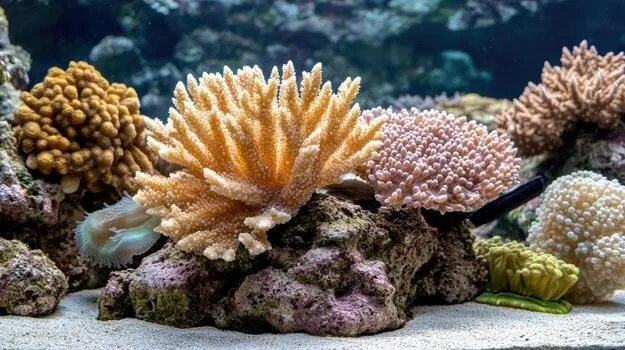

Procesos del proyecto
El objetivo de este proyecto principalmente se basa en identificar un microorganismo simbionte encontrados conviviendo en unas corales junto a la biodiversidad marina en la litoral mediterránea.

Formación y aprendizaje previo al proyecto
Durante la primera fase del proyecto, se aprovechó para proporcionar una formación básica/intermedia a los integrantes del grupo Dualiza, sobre los temas de biología con el que estarán involucrados durante el procedimiento del desarrollo de la investigación de estos microorganismos no identificados. Este proceso de formación inicial proviene de:
- El poco conocimiento biológico de parte de los participantes, el cual era importante para poder entender y adaptar los parámetros necesarios para poder llevar a cabo la investigación de manera correcta y eficiente.
- La ausencia de los datos de estos microorganismos encontrados los cuáles sin esos no había posibilidad de análizar nada.
Llegado el més de abril, Juan Anonio García Lopez, profesor a cargo de la investigación y del alumnado participante de este proyecto; y Luis Flores, alumno del grupo Dualiza, realizaron un viaje directo a la adquisición de muestras las cuales identifcaremos y clasificaremos de el Museo de Historia Natural de Viena (NHM). A lo largo de esa semana de viaje, nuestros representates conocieron y aprendieron varias cosas en aquel Museo donde aguardan datos y muestras de incluso 1 siglo de antigüedad. Paralelamente, se configuró servidores dedicados de forma segura mediante VPN (WireGuard), siendo este nuestra zona de trabajo.
Procedimiento con las muestras
Esta etapa del proyecto fue hacer una fase inicial de control de calidad sobre las muestras donde analizamos las secuencias crudas R1 y R2 con FastQC para evaluar la calidad base a base, detectar adaptadores y corregir desequilibrios en el contenido de GC antes de iniciar cualquier manipulación.
Además del control de calidad, aplicamos un filtrado y limpieza de las muestras de ADN utilizando herramientas como BBDUK o FASTP. Comenzamos comparando la eficacia entre estos dos filtrajes, decantándonos por BBDUK por demostrar una mejor eliminación de falsos positivos que FASTP y después automatizamos el flujo mediante scripts en Bash para procesar lotes de muestras (DNA_001 a DNA_008) descartando lecturas de baja calidad y secuencias demasiado cortas (maq=28, minlen=100).
No nos olvidemos de el filtrado de las muestras de ARN, estas toman un camino diferente a las de ADN debido a la abundancia de ARNr, para ello tuvimos que aislar el ARN mensajero del ARN ribosómico(el ruido), empleando SortMeRNA junto a la base de datos SILVA. Tras enfrentarnos a bloqueos por falta de memoria RAM dada la densidad de los datos, fragmentamos las muestras para procesarlas por separado y optimizar los hilos de procesamiento.
El filtrado de las muestras de ARN toman un camino diferente a las de ADN debido a la abundancia de ARNr, para ello tuvimos que aislar el ARN mensajero del ARN ribosómico(el ruido), empleando SortMeRNA junto a la base de datos SILVA. Tras enfrentarnos a bloqueos por falta de memoria RAM dada la densidad de los datos, fragmentamos las muestras para procesarlas por separado y optimizar los hilos de procesamiento.
Al tener complicaciones con el tema del espacio en los servdores, hicimos una reconstrucción genómica en servidor de alto rendimiento. Para ello transferimos las muestras limpias mediante SCP al servidor de cómputo (SuperDualiza). Iniciamos la reconstrucción de las secuencias sin genoma de referencia previo (de novo) probando ensambladores basados en grafos de de Bruijn (SPAdes y Velvet) y evaluando el rendimiento con múltiples valores de K-mers.